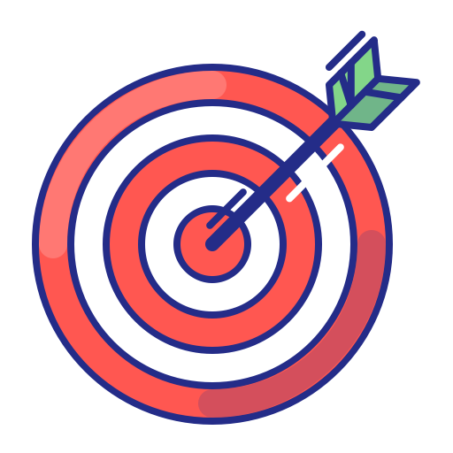

<nav class="navbar navbar-expand-lg navbar-dark" style="background-color:#7b1fa2;">
    <div class="container">
    <a class="navbar-brand" href="#">&nbsp;&nbsp;Issue Tracker</a>
    <div class="ml-auto">
        <button class="navbar-toggler navbar-toggler-right" type="button" data-toggle="collapse" data-target="#navbarNavAltMarkup" aria-controls="navbarNavAltMarkup" aria-expanded="false" aria-label="Toggle navigation">
        <span class="navbar-toggler-icon"></span>
        </button>
        <div class="collapse navbar-collapse" id="navbarNavAltMarkup">
        <div class="navbar-nav">

            <a class="nav-item nav-link active" *ngIf="(currentUser$ | async) as username"><b>{{username}}</b></a>

            <a class="nav-item nav-link" *ngIf="(loggedIn$ | async)" routerLink="user/dashboard" routerLinkActive="active">Dashboard</a>

            <a class="nav-item nav-link" *ngIf="!(loggedIn$ | async)" routerLink="auth/signUp" routerLinkActive="active">SignUp</a>
               
            <a class="nav-item nav-link" *ngIf="!(loggedIn$ | async)" routerLink="auth/logIn" routerLinkActive="active">LogIn</a>
                
            <a class="nav-item nav-link" *ngIf="(loggedIn$ | async)" routerLink="user/reportIssue" routerLinkActive="active"> Report Issue </a>

            <!-- <a class="nav-item nav-link" routerLink="user/createBlog" routerLinkActive="active" *ngIf="(loggedIn$ | async)"> Create </a> -->

            <a class="nav-item nav-link" *ngIf="(loggedIn$ | async) as val" (click)="logout()"> Logout </a>
        </div>
        </div>
    </div>
    </div>
</nav>

<!-- *ngIf="(currentUser$ | async) as username" -->